Love
Welcoming people with kindness, dignity, and compassion.
Faith · Community · Compassion
A place to belong. A place to grow. A place to serve.
Growing in faith, walking in compassion, and serving our community together. Everyone is welcome, and every person deserves to be treated with love, dignity, and respect.
Come Serve GodWho We Are
New Covenant Sanctuary (NCS) is committed to faith, fellowship, encouragement, and practical care for the wider community.
We seek to create a welcoming place where individuals and families can grow spiritually, build meaningful relationships, and find opportunities to serve others.
Our heart is to share compassion beyond boundaries—welcoming people from every race, background, and circumstance, and offering support with kindness and respect.
Through Bible learning, prayer, children’s activities, fellowship, and community outreach, we hope to encourage people to grow together and make a positive difference.
“Let all that you do be done in love.”1 CORINTHIANS 16:14
Welcoming people with kindness, dignity, and compassion.
Growing through Scripture, prayer, learning, and encouragement.
Putting care into action and supporting our wider community.
Our Leadership
A Calling to Serve, A Heart to Lead
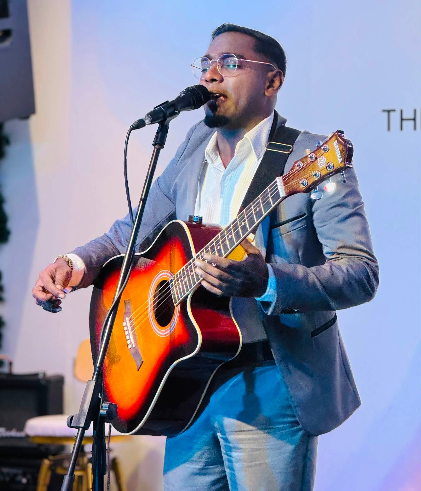
Every calling has a beginning, and every journey of faith comes with moments of uncertainty, growth and surrender. For Pastor Joshua Ravi, his journey into ministry has been one shaped by faith, obedience and a growing passion to serve God's people.
Having pursued his Bible college education and obtained a diploma, Pastor Joshua began building his foundation in God's Word. However, stepping into the responsibility of preaching and leading a congregation was not something he initially felt confident about. During the early days of ministry, he often felt hesitant and nervous about preaching, and would invite other pastors to share the Word during church gatherings.
A defining moment came during one particular service when a guest speaker was preaching. Pastor Joshua experienced what he understood to be a personal calling from the Holy Spirit, encouraging him to step forward and begin preaching from the following week, trusting that God would teach and guide him along the way.
Taking that step of faith, Pastor Joshua delivered his first sermon on the Holy Spirit. What once seemed beyond his confidence gradually became part of his calling. Through obedience, experience and continued spiritual growth, he developed into a teacher, preacher and spiritual adviser, faithfully serving the congregation.
As the ministry grew, so did his heart for the people entrusted to his care. His passion is to reach souls, bring people back to Christ and help individuals discover their God-given purpose. He believes that the work of the church extends beyond gathering people for worship; it is about making disciples, equipping believers and sending them out to fulfil their calling.
Today, Pastor Joshua's vision reaches beyond the present generation. He desires to see lives transformed, families strengthened, young people guided in faith and disciples raised to continue the work of God for generations to come.
His journey reminds us that answering God's call does not require perfect confidence or having all the answers. It begins with a willing heart, a step of obedience and the faith to trust God throughout the journey.
Life at NCS
A glimpse of the people, prayer and shared moments that make up our NCS family.
Gathering together in praise, prayer and the Word.
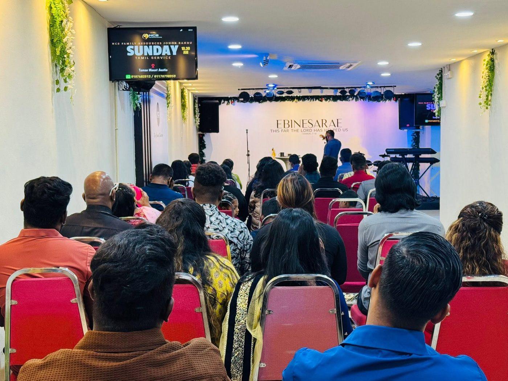
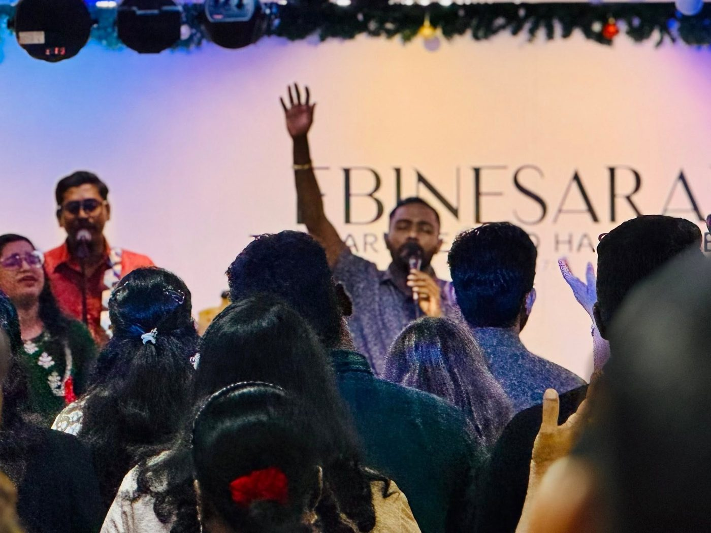
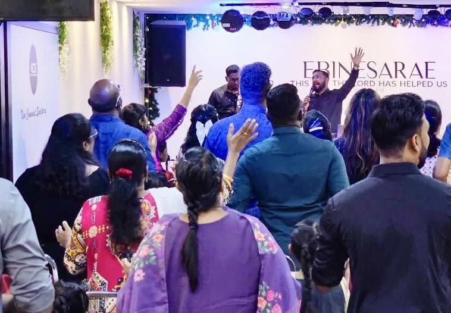
Growing together through prayer, encouragement and care.
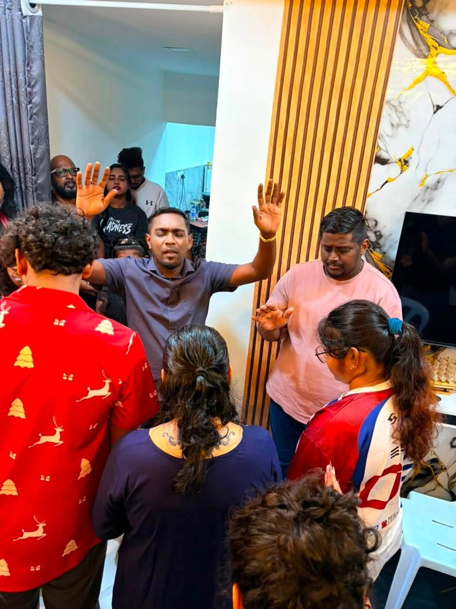
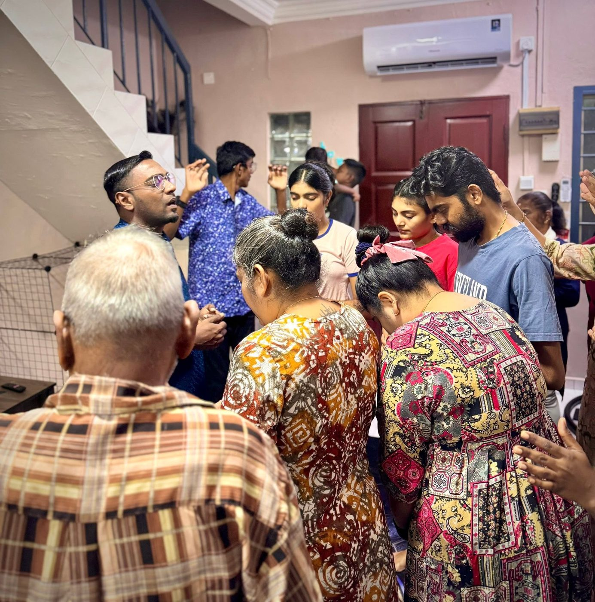
More ministry photographs and stories will be added as our community grows.
Our Journey
A Journey of Faith, Prayer and God's Faithfulness
New Covenant Sanctuary (NCS) began its journey in Johor Bahru, Malaysia, in 2008, with a heart to reach people, share the love of Christ and build a community rooted in faith.
What started as a small ministry has grown through years of prayer, perseverance, obedience and God's grace. Every chapter of our journey has carried its own challenges, lessons and testimonies.
NCS was established in Johor Bahru with a vision to reach souls and bring people closer to Jesus Christ. It began as a small ministry, built on faith and a desire to serve God and His people.
In 2014, Pastor Joshua Ravi took over the leadership of the ministry. It was a new beginning that came with challenges and uncertainty. With his wife and young son standing alongside him, he continued the journey through faith and prayer.
The ministry began reaching out to families through personal visits and follow-ups. One of the early outreach efforts involved connecting with a family who had little understanding of the church and Jesus Christ.
Through these efforts, NCS continued to build relationships, share the Gospel and welcome new people into the fellowship.
As more people joined the ministry, the original worship space became insufficient. The church moved into its first dedicated building at Mutiara Emas to accommodate the growing congregation.
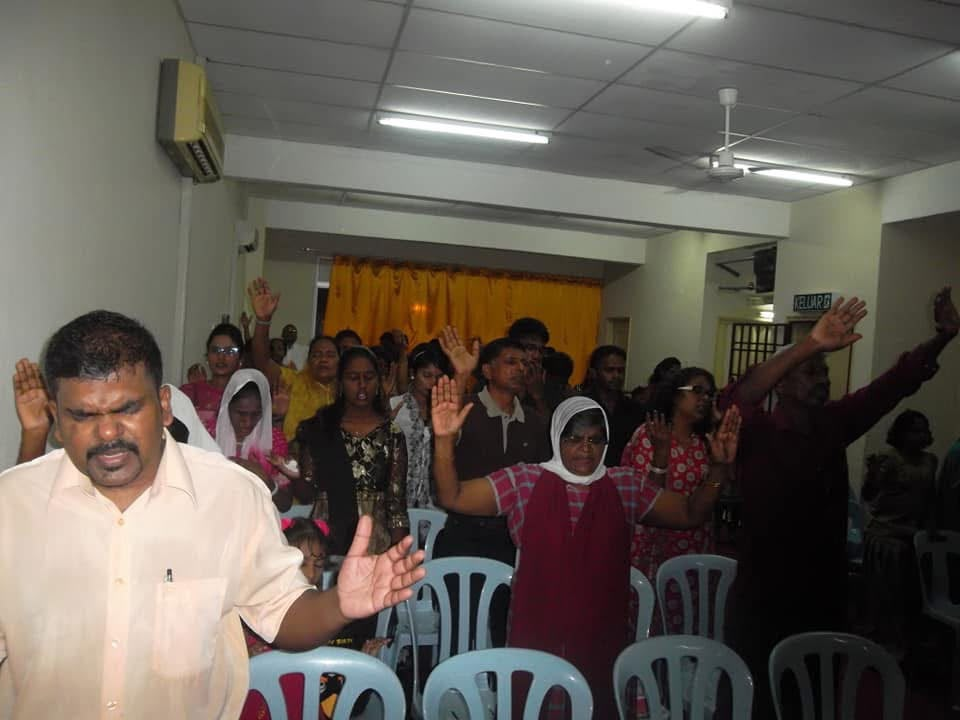
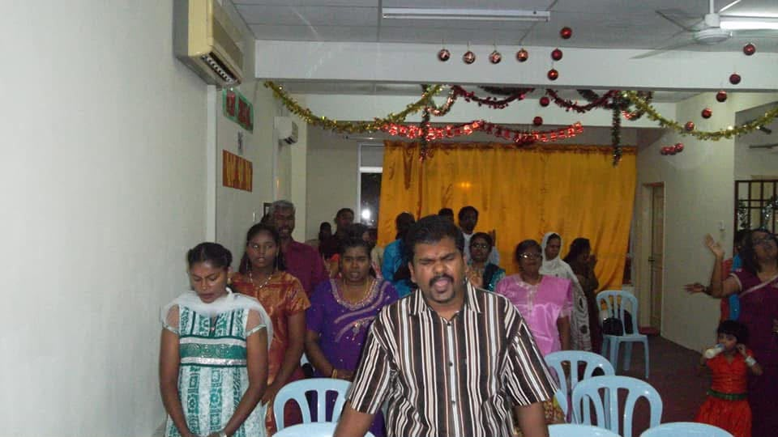
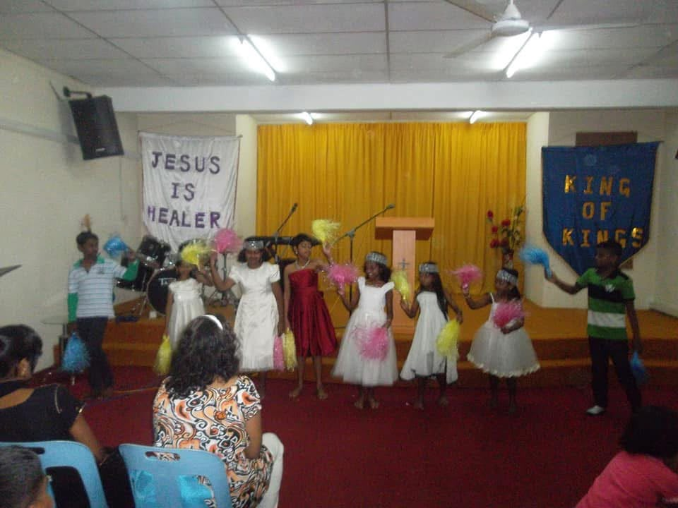
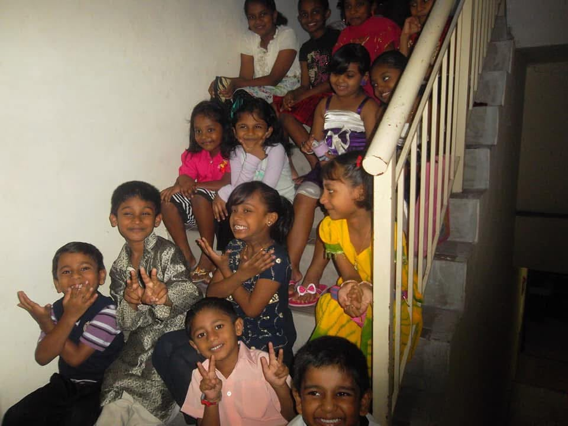
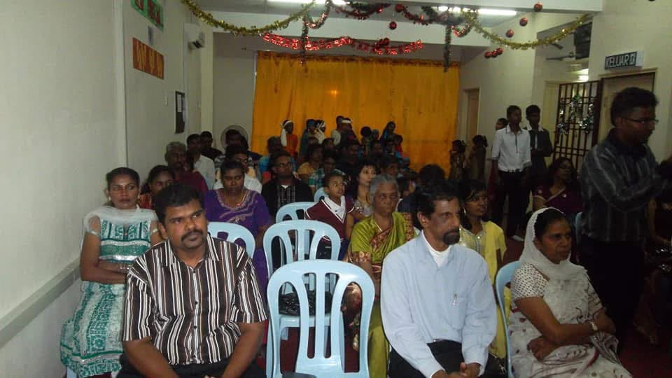
With continued growth, NCS moved into larger premises at Austin Square. The congregation grew to approximately 100–150 people, including around 80 youths.
The journey was not without difficulties. Financial responsibilities and building expenses brought challenges, but the church continued to stand together in prayer and faith.

.jpeg)
.jpeg)
.jpeg)
.jpeg)
.jpeg)
.jpeg)

.jpeg)
.jpeg)
.jpeg)
In 2021, NCS moved to its current premises at Jalan Austin Perdana.
Even when the building was not fully ready and electricity was unavailable during the early days, worship continued. The congregation persevered, trusting in God's provision.
Looking back, every building, every gathering and every life touched represents another testimony of God's faithfulness.
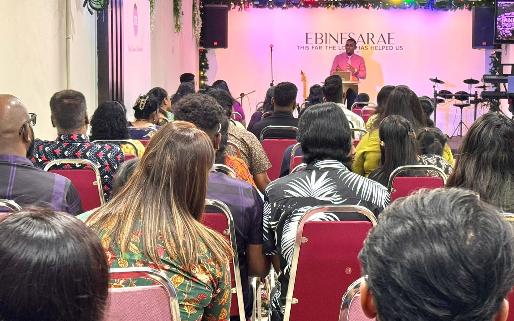
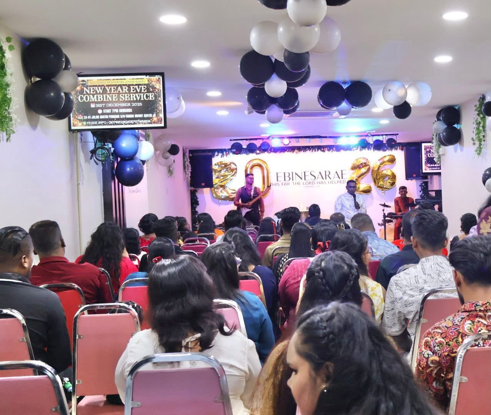
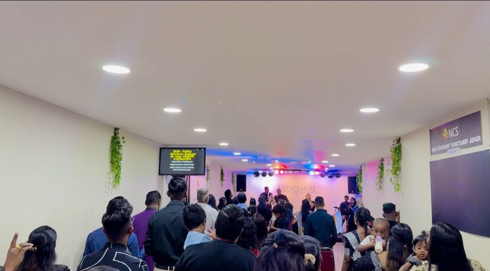
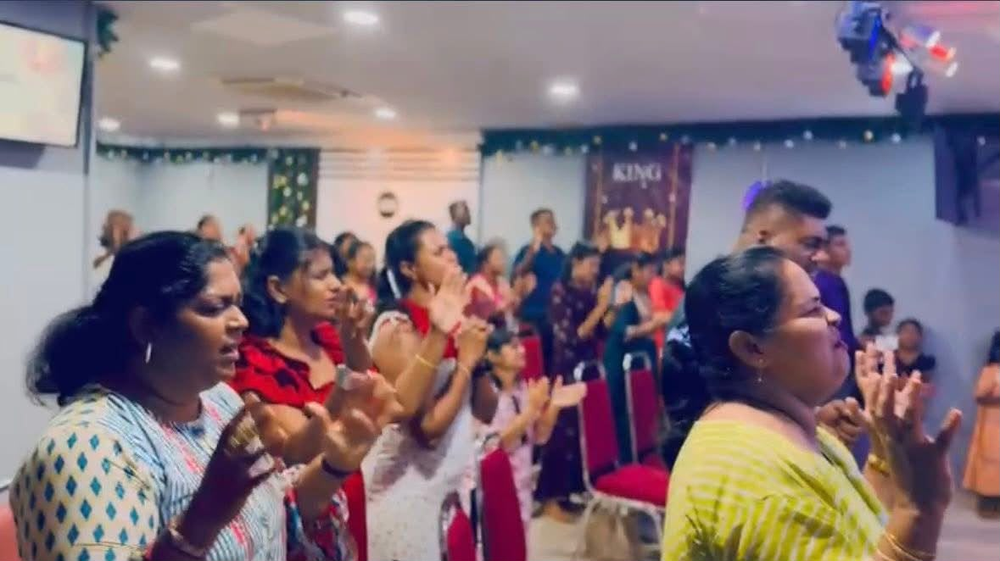
The Next Chapter
Building for Future Generations
As NCS continues to grow, we believe that our journey is far from over.
With a growing vision to reach more souls, nurture believers and serve the wider community, we are now working towards establishing a new church building.
This upcoming building represents more than just a physical place of worship. It represents our commitment to creating a spiritual home where individuals and families can encounter God, grow in faith, find fellowship and discover their purpose.


Proposed New Church Building
Our Vision
A welcoming sanctuary where individuals and families can gather to worship, pray and experience God's presence.
A spiritual home where families can grow together in faith, fellowship and love.
A nurturing environment where the younger generation can learn God's Word, discover their purpose and develop a strong foundation in Christ.
A place where believers can be equipped, trained and encouraged to fulfil their God-given calling.
A centre for compassionate outreach, providing care, encouragement and support to those in need.
A lasting foundation where the work of God can continue from generation to generation.
As we take this next step of faith, we remain grateful for every person, every prayer and every season that has brought us this far.
“The journey continues. The vision remains. And we look forward with faith to what God has prepared for the generations ahead.”New Beginnings. Greater Purpose. Generations of Impact.
Worship · Heal · Grow · Serve
Whatever season of life you are walking through, you are welcome here. Find prayer, healing, friendship and purpose as we grow together in God’s love.
Learn and reflect on the Bible together in an online class.
Every Tuesday · 8:30 PM – 10:00 PM
Contact Selena: 017-404 2770
A welcoming time for children to learn, connect, and grow in faith.
Every Saturday · 5:00 PM – 7:00 PM
Contact Pastor Adryana: +60 16-748 1219
Come together for prayer, hope, and encouragement.
Every Thursday · 8:00 PM – 10:00 PM
Contact Pastor Adryana: +60 16-748 1219
Gather for fellowship, connection, and encouragement as a community.
Every Sunday · 10:30 AM – 12:00 PM
Contact Pastor Adryana: +60 16-748 1219
A new space for young people to connect, discover their gifts, build confidence, and grow together.
Every Wednesday · 8:00 PM – 10:00 PM
Contact Selena: 017-404 2770
We aim to encourage practical care, community support, and opportunities to help people in need.
Care · Help · Serve · Together
Contact Pastor Adryana: +60 16-748 1219
The Heart of Our Calling
Some wounds cannot be seen. Some burdens are carried in silence. At NCS, our heart is to be a place where hurting people are welcomed with compassion, listened to without judgement, and supported as they find hope, healing and restoration.
Through prayer, fellowship, God's Word and practical care, we want to walk alongside those who feel weary, forgotten or broken—one life, one family and one story at a time.
Come as you are. You are welcome here.
Find Your Place at NCSWe'd Love to Hear From You
Have a question about a class, ministry, or community activity? Reach out to us.
Scan to Find Us
Open our location directly in Google Maps.